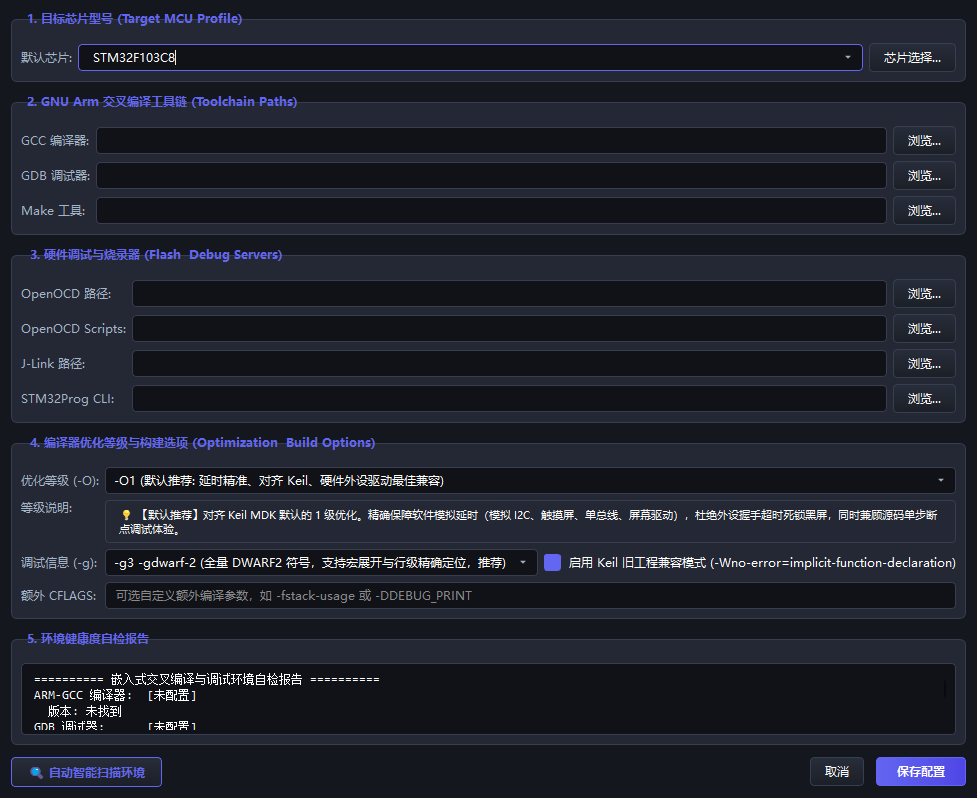

彻底告别 Keil 锁死、粗糙与闭源痛点。原生构建在 GCC 14 现代编译工具链之上，深度集成 OpenOCD/GDB 全功能硬件级在线调试、工业级虚拟示波器 与 CAN/串口多协议分析，让嵌入式软硬件开发如此纯粹优雅。
CFLAGS += -O2 -g -gdwarf-2 -fcommon
自动配置指令流水吞吐与体积平衡，注入 DWARF2 符号表确保断点精准定位，并容忍旧库隐式声明。
为什么越来越多工程团队与极客开发者从 Keil MDK 与传统工具链迁移到 SmileCodeIDE？
| 对比维度 | 传统 Keil MDK / 闭源 IDE | STM32CubeIDE / Eclipse系 | SmileCodeIDE (v2.3.1) |
|---|---|---|---|
| 软延时防死锁机制 高优化等级下的稳定性 | ✕ 高等级优化 (-O2/-O3) 易优化掉空循环延时导致板卡假死 | △ 需手动添加 volatile 或改写底层汇编 | ✓ 内置防锁死机制，可视化精准调控，稳定运行 |
| 现代编译链兼容性 GCC 14 / C23 标准支持 | ✕ ArmCC 语法古老，迁移新 GCC 产生大量报错 | △ 工具链升级滞后，定制参数配置繁琐 | ✓ 原生配备 GCC 14，独家宽松兼容模式 (-fcommon)，一键平滑过渡 |
| 界面颜值与暗黑主题 长时间编码用眼健康 | ✕ 90年代灰白界面，无真正暗色模式，极易视觉疲劳 | △ 基于 Eclipse 暗黑不完整，弹窗控件易白边割裂 | ✓ 4 套极致调优现代主题 (Dark/OneDark/Solarized/Light)，全局统一 |
| 内置辅助仪器套件 示波器、CAN/串口分析 | ✕ 纯编辑器，调试复杂协议必须打开多个第三方软件 | ✕ 无内置硬件协议示波器，需额外安装拓展插件 | ✓ 工业级虚拟示波器 + CAN/CANOpen/UDS 汽车诊断 + 高速串口图表一网打尽 |
| 硬件调试与驱动兼容 ST-Link / J-Link / DAP | △ 限制部分盗版调试器，驱动经常遭遇冲突被禁 | △ 主要绑定 ST 原厂调试器，配置多芯片较繁琐 | ✓ 基于 OpenOCD/GDB，支持 ST-Link/J-Link/DAP-Link，自动枚举与识别 |
| 授权费用与代码尺寸限制 团队商业合规门槛 | ✕ 商业授权极其高昂，免费评估版强限 32KB 代码 | ✓ 免费，但内存占用庞大冷启动慢 | ✓ 100% 自由开源，无任何代码尺寸限制，秒级瞬时冷启动 |
从代码编写、编译构建、到硬件在线烧录调试与数据信号分析，一站式解决。
告别在命令行或黑盒脚本中盲写 CFLAGS。提供 -O0 到 -O3、-Os、-Og 六大标准优化挡位可视化选择，配套 DWARF2 符号表注入与经典代码宽容兼容开关，支持动态实时提示。
深度集成 OpenOCD 服务端引擎与 GDB-MI 协议。支持一键扫描 USB 硬件设备（ST-Link / J-Link / CMSIS-DAP），支持断点设置、单步步过/步入、局部变量监视与芯片外设寄存器实时排查。
内置基于 QCustomPlot 深度优化的高速虚拟示波器，支持实时多通道波形采样、波形缩放、测量游标。更有 CAN/CAN-FD 报文解析、DBC 解码、UDS 汽车诊断与 IAP 固件下载。
基于现代 Qt6 C++ 原生构建，摒弃 Electron 与臃肿 Webview 框架的沉重开销。内存占用仅为同类工具的三分之一，毫秒级冷启动，支持插件动态热加载与自由功能解耦扩展。
告别命令行黑盒。直观掌控 GCC 编译参数，平衡执行性能、Flash 体积与单步调试体验。
CFLAGS += -O2 -g -gdwarf-2 -fcommon推荐用于正式发布版本。在编译速度、代码执行性能与生成固件大小之间取得最佳平衡。开启大部分安全的高级指令调度优化。

每一项功能演进与关键 Bug 修复均有严谨的技术排查、定位复盘与全流程文档归档。
深入剖析高版本 GCC 将空循环软延时完全优化清空的根本原因，对比 SysTick、DWT 与 volatile 机制，彻底根治“Keil 正常但其他环境不闪灯假死”的顽疾。
针对从 Keil 迁移项目在 GCC 14 常见的 invalid suffix 与 implicit declaration of function 报错，制定标准修复与编译宽容双层方案。
详解全新分组框“4. 编译器优化等级与高级构建选项”的数据结构定义、UI 布局自适应、QSettings 持久化与异步构建参数无缝传递的全流程。
系统性解决暗色模式下 QCheckBox、QRadioButton 等基础控件出现刺眼白底色块的层叠样式覆盖问题，保证深色主题一致性。
排查 QComboBox 下拉指示器由于字体缺失或伪类属性挤压导致的黑色横线问题，改用高保真矢量自绘倒三角方案。
通过 QSettings 注入最近打开工作目录记忆持久化，消除反复翻找深层文件路径的烦琐操作，大幅提升多工程切换开发效率。
支持 Windows 10/11 64-bit 系统，提供全套安装格式，按需选择，解压或安装即用。
自带完整 Qt6 与 MinGW 运行时，不写注册表，配置完全本地化，适合移动办公与 U 盘随身携带。
SHA256: DBE25534A2749...95FB5
经典 Windows 安装向导，自动配置桌面与开始菜单快捷方式、文件关联并附带完整的卸载管理工具。
SHA256: F127DE33F5231...ED92B4
基于微软官方 Windows Installer 架构，原生支持 msiexec /qn 静默安装与企业组策略 (GPO) 统一分发。
SHA256: AE28A1077CBDB...21563
arm-none-eabi-gcc (推荐 GCC 10 或更高版本，原生支持 GCC 14)。WinUSB 或 libusb-1.0，以确保 OpenOCD 顺畅连接。有疑问？这里为您准备了最常见的单片机工程迁移与使用问题。
基于开放的 OpenOCD 与 CMSIS 架构，SmileCodeIDE 原生支持包括 STM32F0、F1、F2、F3、F4、F7、H7、G0、G4、L0、L1、L4 等在内的全部主流芯片系列，并可通过导入自定义 Linker 脚本与 SVD 文件灵活拓展其他厂商的 Cortex-M0/M3/M4/M7 芯片。
SmileCodeIDE 支持直接读取 Makefile 与标准 GCC 源码目录。如果工程中含有 Keil 专有语法（如 __breakpoint(0) 或 __packed），只需开启“宽容编译模式 (-fcommon)”或使用 GCC 等效关键字 __attribute__((packed)) 即可实现零摩擦编译迁移。
这是经典编译优化陷阱。Keil 默认低优化通常不内联或保留局部空循环，而高版本 GCC 会将诸如 for(i=0; i<0xFFFF; i++); 的空循环视为无副作用代码直接抹除！SmileCodeIDE 推荐将优化设为 -O2 或 -Og，并在延时变量上使用 volatile 或调用系统硬件滴答时钟 HAL_Delay()。
这是由于 ST-Link 当前驱动被 Windows 默认识别为标准 MASS STORAGE 或旧版 STSW 专有驱动所致。只需打开开源驱动工具 Zadig，找到 ST-Link Debug 接口，将其驱动替换为 WinUSB 或 libusb-win32，即可顺利连接 OpenOCD。
完全支持！在【烧录与下载参数配置】中提供了“4. 自定义 OpenOCD 脚本 (可选)”，您可以自由指定专用的 interface/xxx.cfg 与 target/xxx.cfg，满足工业级多核心与特殊调试通道需求。